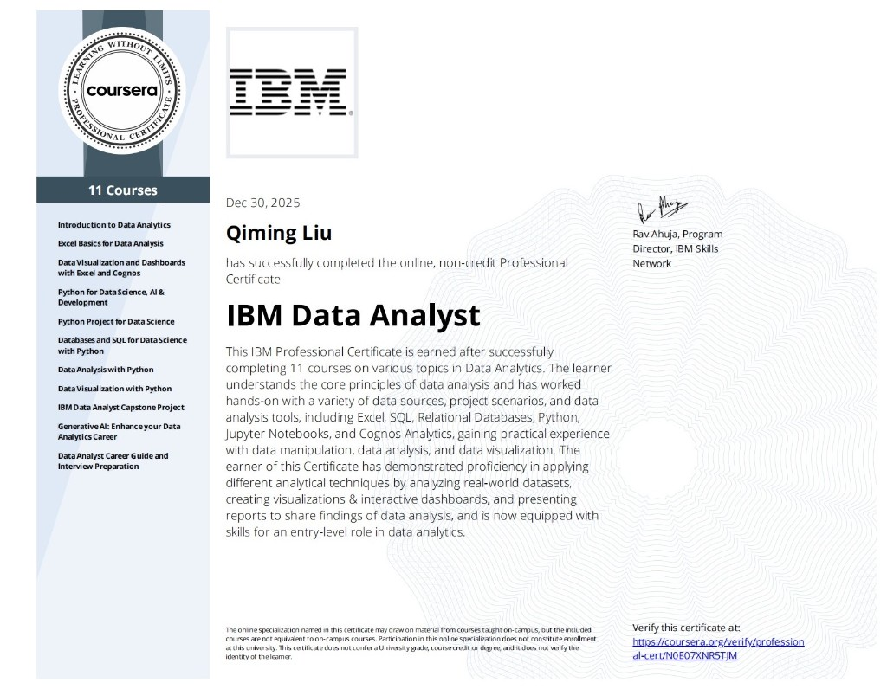

Qiming Liu / Kiren
Data Analyst
Data Analytics student building practical systems. Learning through iteration and problem-solving. Focused on adapting and improving how things work.

Data Analyst
Data Analytics student building practical systems. Learning through iteration and problem-solving. Focused on adapting and improving how things work.
As a Data Analytics student at Missouri State University, I focus on building practical systems that support real operational and decision making needs.
I develop my abilities through hands on projects and iterative problem solving, learning how to adapt and improve solutions based on real use and feedback.
I am seeking internship opportunities where continuous learning, execution, and system improvement are essential.
Bank of Chaoyang | Liaoning, China
Feb 2025 – Mar 2025
Loan Default Prediction
Mar 2026
Featured · AITCC 2026 Analyze IT Challenge · 2nd Place
End-to-end operational risk system built on the AITCC loan default pipeline — from messy multi-table banking data to monthly KPIs, tiered alerts, and AI-generated executive reports.
Payment behavior (on-time rate, delinquent days) predicts default far better than credit score or income alone — the gap showed up clearly in correlation analysis during EDA.


Have a project in mind? I'd love to hear about it.
Ask me anything